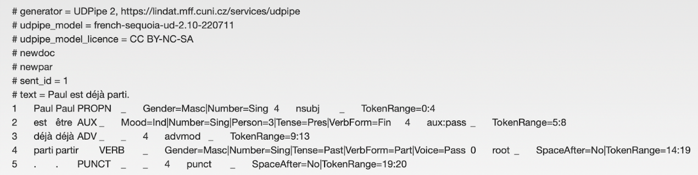
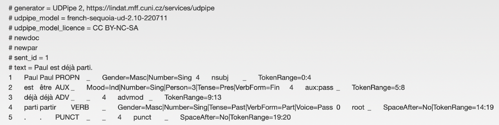
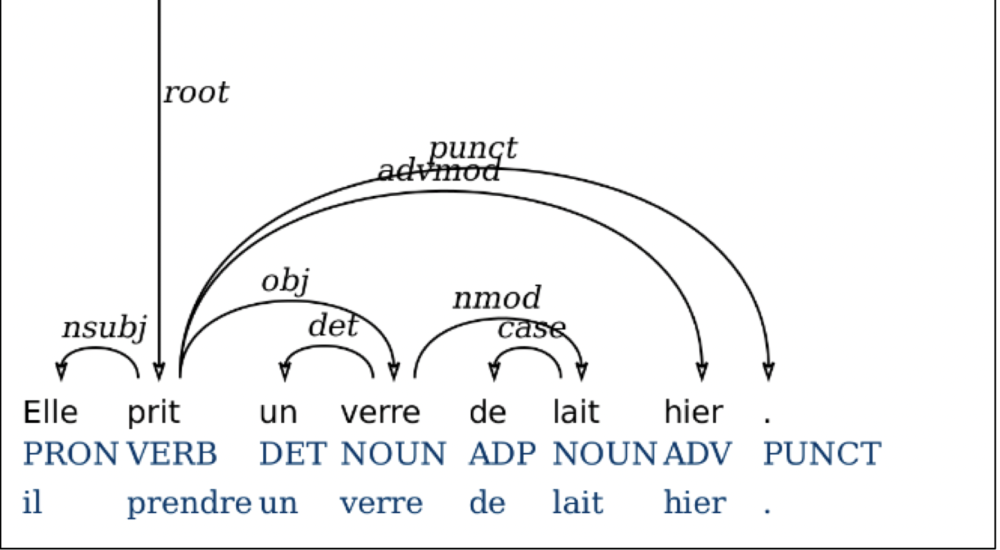

Introduction de CoNLL
Le format CoNLL, proposé par la Conference on Computational Natural Language Learning (né ainsi son nom), est un format standard pour la représentation de données annotées en linguistique informatique, notamment pour les tâches de segmentation en phrases, d'analyse morpho-syntaxique, d’analyse de la grammaire et de reconnaissance d'entités nommées. Le format CoNLL a été développé pour faciliter la comparaison et l'évaluation de différents systèmes de traitement automatique du langage naturel (TALN). Vu que CoNLL est un format qui est facile à traiter et analyser, et qui fournit aux chercheurs un standard unitaire pour qu’ils puissent échanger et partager les données facilement, il est ainsi devenu l’un des formats des données les plus couramment utilisés dans le domaine du TAL.
Le format CoNLL présente des colonnes, chaque colonne représentant une propriété linguistique différente. Par exemple, pour une tâche d'analyse morpho-syntaxique, chaque ligne représente un mot et chaque colonne représente une propriété telle que le lemme, la forme fléchie, la nature, le numéro de dépendance syntaxique et le genre, etc. A l’aide de certains outils à l’exemple de UDPipe, il est possible de générer automatiquement des phrases et des textes annotés en format CoNLL-U. Suivant un exemple de données au format CoNLL généré automatiquement par UDPipe :

Le format CoNLL est souvent utilisé pour les tâches d'évaluation, où les données annotées sont divisées en ensembles d'apprentissage et de test, et où les performances des différents systèmes de traitement automatique du langage naturel sont comparées en fonction de leurs résultats sur les ensembles de test. Le format CoNLL est également utilisé pour l'annotation manuelle de données linguistiques, ce qui facilite la création de corpus de textes annotés pour la recherche en linguistique computationnelle.
Le format CoNLL présente des colonnes, chaque colonne représentant une propriété linguistique différente. Par exemple, pour une tâche d'analyse morpho-syntaxique, chaque ligne représente un mot et chaque colonne représente une propriété telle que le lemme, la forme fléchie, la nature, le numéro de dépendance syntaxique et le genre, etc. A l’aide de certains outils à l’exemple de UDPipe, il est possible de générer automatiquement des phrases et des textes annotés en format CoNLL-U. Suivant un exemple de données au format CoNLL généré automatiquement par UDPipe :

Le format CoNLL est souvent utilisé pour les tâches d'évaluation, où les données annotées sont divisées en ensembles d'apprentissage et de test, et où les performances des différents systèmes de traitement automatique du langage naturel sont comparées en fonction de leurs résultats sur les ensembles de test. Le format CoNLL est également utilisé pour l'annotation manuelle de données linguistiques, ce qui facilite la création de corpus de textes annotés pour la recherche en linguistique computationnelle.
Applications du format CoNLL
Avec sa polyvalence et sa flexibilité, le format CoNLL est employé couramment dans le domaine du TAL pour de nombreuses tâches et langues. Plus précisément, voici quelques exemples de l’utilisation du format CoNLL :
- Étiquetage grammatical: Le format CoNLL peut être utilisé pour l'étiquetage grammatical, Il donne à chaque mot une étiquette, qui est employée pour analyser la nature lexicale de chaque mot du texte, ce qui aide l'ordinateur à mieux comprendre le texte.
- Reconnaissance des entités nommées : Dans le format CoNLL, chaque token comporte un étiquette de l’entité nommée qui sert à identifier le nom des gens, des endroits et des instituts. Ces étiquetages nous aident à extraire les informations des entités dans le texte, permettant à la machine de mieux comprendre le texte et d’améliorer ainsi la performance de traitement automatique du langage naturel.
- Analyse en dépendance：Sous le CoNLL format，chaque mot porte une étiquette de dépendance qui identifie la relation grammaticale entre le mot étiqueté et d'autres mots. Ces étiquetages sont destinés à construire l'arbre de dépendance du texte, ce qui aide le système à reconnaître la structure grammaticale.
 - Etiquetage des rôles sémantiques : le format CoNLL sert aussi à étiqueter les rôles sémantiques avec des tokens portant une étiquette sémantique. De cette façon, la machine comprend mieux la signification de chaque token dans la phrase et se débrouille mieux pour la compréhension du texte.
Variantes de CoNLL
Il existe plusieurs variantes du format CoNLL, qui ont été développées ayant pour but de réaliser de différentes tâches de linguistique informatique. Voici quelques-unes des variantes les plus courantes :
- CoNLL-2000 : C'est la première variante du format CoNLL, qui a été introduite pour la segmentation en groupes nominaux (chunks) lors de la Conférence sur l'apprentissage automatique en langage naturel de l'an 2000.
- CoNLL-2003 : Cette variante du format CoNLL a été développée pour la tâche de reconnaissance d'entités nommées (Named Entity Recognition) lors de la Conférence sur l'apprentissage automatique en langage naturel de 2003. Le format CoNLL-2003 comprend des colonnes pour le mot, le POS-tag, l'étiquette de chunk et l'étiquette d'entité nommée.
- CoNLL-X: Ce format CoNLL a été introduit en 2006 pour l’analyse morpho-syntaxique et l’analyse syntaxique en dépendance. Le format CoNLL-X (pour eXtended) comprend des colonnes, où les catégories grammaticales, les caractéristiques morphologiques, le POS-tag, l’étiquetage de dépendance syntaxique sont annotés.
- CoNLL-2003 : Cette variante du format CoNLL a été développée pour la tâche de reconnaissance d'entités nommées (Named Entity Recognition) lors de la Conférence sur l'apprentissage automatique en langage naturel de 2003. Le format CoNLL-2003 comprend des colonnes pour le mot, le POS-tag, l'étiquette de chunk et l'étiquette d'entité nommée.